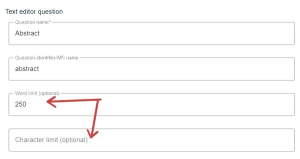
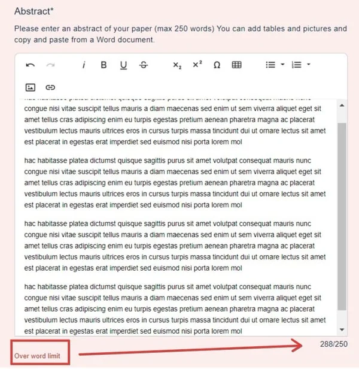
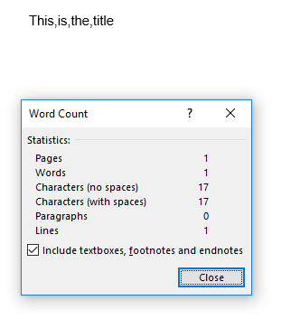
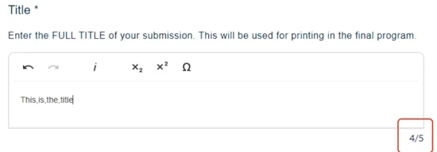

Word and character count
For event organisersNot an organiser?
On text questions, you can add a word or character limit, if you wish.#
submitter, reviewer, delegate etc), please click here .
From your go to Event dashboard → Abstract Management → Submission → Form & Setup → Submission form
Skip to Discrepancies with word count
Click on any text editor question.
All text editor type of questions (including the abstract question), allow you to enter a word or character limit.

Although you can enter a value for each, when the submitter reaches the lower of the two, they will be alerted that they are over the limit.

NB: Although the user can still submit, their submission will be marked as incomplete.
Discrepancies with word count
When text contains a lot of numerical data and symbols, there can be discrepancies with word count when copying and pasting from Microsoft Word or other text editors into the Oxford Abstract forms. Different systems have many varying calculations, with no standard set of algorithms, and this can result in word count over the permitted maximum.
For example. Microsoft Word counts the following text as 1 word.

However, when copying to a submission form, this is shown as 4 words.

For guidance: the following count as one word on Oxford Abstract's system
1+1=2
n=23
P>2.5
(p<4.5)
whereas the following items count as two words on our system but only as one on Microsoft Word.
and/or
up(down)
all,around
To permit the submissions affected by these discrepancies, you can increase the word count above the stated amount after the deadline to give authors a bit of leeway. This will result in all those submissions that have gone over the threshold to be submitted as complete.

Did this page solve it?
Thanks — this helps us fix it.
Didn't solve it? Ask our support team
No question is too small, and there's no charge for asking. Raise a ticket and someone who knows the software will pick it up.